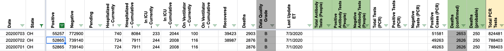
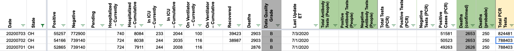

[OH]Review historicals for mismatches with Ohio's page
From a Front ticket:
"I am an avid COVID-19 tracker from Cincinnati. I refer to your Ohio page regularly to get testing data, and share that with my social network. But your recent chart showing zero cases on July 2nd a large spike in new cases on July 3rd caught my attention. This information is wrong. So, I double checked the rest of July and found every single date was wrongly reported. I did not check June’s info.
July 1 you reported 1,076 new cases; actual new Ohio cases were 1,041
July 2 you reported 0 new cases; actual new Ohio cases were 1,260
July 3 you reported 2,392 new cases; actual new Ohio cases were 1,058.
July 4 you reported 926 new cases; actual new Ohio cases were 907
July 5 you reported 968 new cases; actual new Ohio cases were 970
July 6 you reported 805 new cases; actual new Ohio cases were 774
July 7 you reported 948 new cases; actual new Ohio cases were 918
July 8 you reported 1,277 new cases; actual new Ohio cases were 1,234
July 9 you reported 1,150 new cases; actual new Ohio cases were 1,122
July 10 you reported 1,525 new cases; actual new Ohio cases were 1,494
Incidentally, the number of new cases on July 10th was our highest to date. And we have not had any date with zero cases reported since we started reporting on or about March 8th.
I strongly encourage you to correct the Ohio errors, or take down the page."
Comments
Actually re: 7/9, There’s a daily testing by result date time series available here: https://coronavirus.ohio.gov/wps/portal/gov/covid-19/dashboards/key-metrics/testing However the daily totals there don’t agree with the daily reports from the state, so we would need to sync the whole history. But this seems like a valid path to fixing 7/9.
7/2 Before: 
7/2 After: 
Ohio’s secondary dashboard with total tests did not update by our latest 7/2 screenshot, so there’s no way to update Negatives or Total PCR tests. The 7/2 death number now matches 7/3; this is true in the screenshots as well. Current hospitalization numbers don’t appear to be screenshotted so those remain unchanged for 7/2.
The tests by result date time series I mentioned in the earlier comment might also let us fix the total tests for 7/2 in addition to 7/9.
I’m going to close this issue and open a new one for the potential sync of daily testing data since I won’t have time to do that before today’s pub shift.
Took a quick look. July 2 they must have updated late, we have no new numbers. On July 9th our negatives number repeats but cases and deaths were updated. I can repair July 2nd from screenshots. On July 9th, screenshots indicate the state didn’t update its total test number. So I think we are stuck there.
Based on a spot check, I believe the other “discrepancies” listed here are due to the fact our reported cases are confirmed + probables and not just probables.